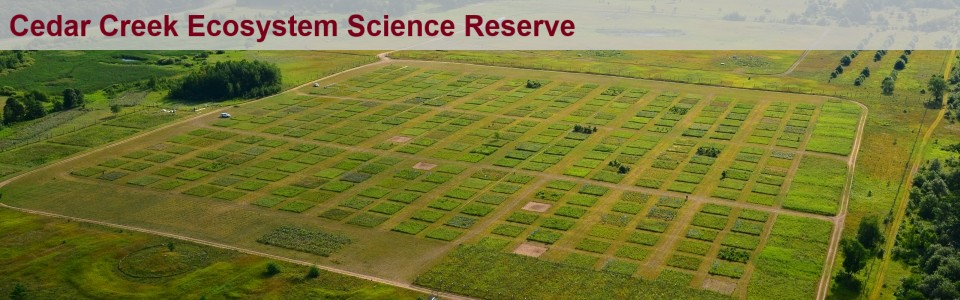
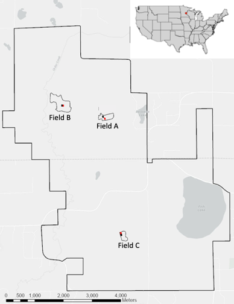
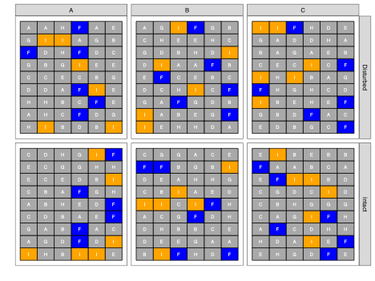
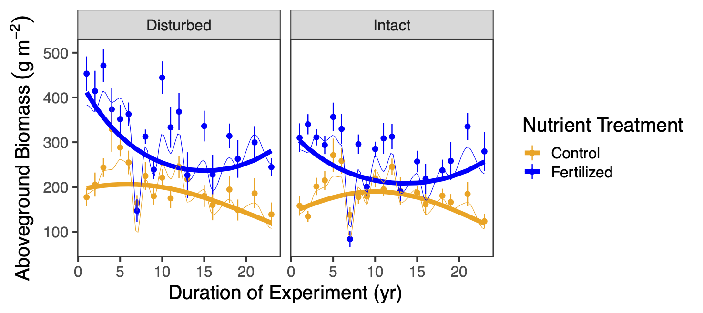

Introduction to path and structural equation modelling
Day 1: Introduction to dataset and exercises
Frank Pennekamp
Department of Evolutionary Biology and Environmental Sciences, University of Zurich
November 4, 2026
Your turn: working with the Seabloom dataset
Introduction to the dataset

- Experimental grassland study (started in 1982)
- Long-term consequences of human-driven environmental changes on grasslands:
- Soil disturbance (disk harrowing)
- Nitrogen deposition

Introduction to the dataset

- Study site located in Minnesota (Cedar Creek Ecosystem Science Reserve).
- Design:
- three study fields within the reserve.
- 35 x 55 m intact (black) and disturbed (red) plots within each field.
Introduction to the dataset

- 4 x 4 m nutrient treatment plots within the intact or disturbed plots (within fields A-C).
- Letters indicate the nutrient treatments.
Introduction to the dataset

- Response variable: aboveground plant biomass.
Introduction to the dataset
Response variables of interest:
- Species richness (number of species per 0.3 m\(^2\))
- effective number of species (ENSPIE)
- Simpsons’s evenness (measures the degree of concentration when individuals are classified into types). High values indicate a more even distribution of individuals among the species.
ENSPIE equivalent to \(1 / \sum_{i=1}^{S} p_i^2\) where \(S\) is the total number of species and \(p_i\) is the proportion of the community biomass represented by species \(i\).
Potential research questions
- How has aboveground biomass changed as a function of soil disturbance and nutrient addition?
- How are these effects mediated by biodiversity?
The meta-model
- Function (biomass) is directly influenced by human impact (nutrients, disturbance)
- Function (biomass) is directly influenced by biodiversity (richness and evenness).
- Human impact also influences biodiversity and thus, have an indirect effect on function via biodiversity.
Exercise 1 (explore variable interrelationships)
- Load the Seabloom dataset and average over the available years(data and code provided)
- Inspect relationships between the following variables:
- nadd, disk, rich, even, ens.pie, mass.above
- Fit multiple linear regression models to estimate coefficients
- direct effects of nadd, disk, rich and even on above ground biomass (AGB)
- direct effects of nadd and disk on richness and evenness
- check multivariate normality of model residuals (hint: use the function mvn() in the R package MVN)
- What do you conclude?
Exercise 2 (fit and inspect a path model)
- Fit the above DAG to the Seabloom data:
- Assess model goodness of fit.
- Investigate the modification indices. Any paths that need adding?
- Check model summary.
- Do you have a valid model?
Exercise 3 (derived quantities)
After finding a model with good fit:
- Model analysis:
- Calculate the standardized coefficients.
- Calculate derived quantities (direct, indirect and total effects of nutrient addition on biomass).
Exercise 4 (fit a saturated model)
- Build the saturated model, then:
- AIC comparison with simpler model used in exercise 3. Which one is more parsimonious?
- Perform model pruning on saturated model.
Exercise 5 (mediation analysis)
Full mediation
Partial mediation
No mediation
- Perform mediation analysis:
- Is there no, partial, or full mediation of disturbance on biomass via richness and eveness?
- Compare model fits.
- Which model better represents the data?
Introduction to path and structural equation modelling (2026)